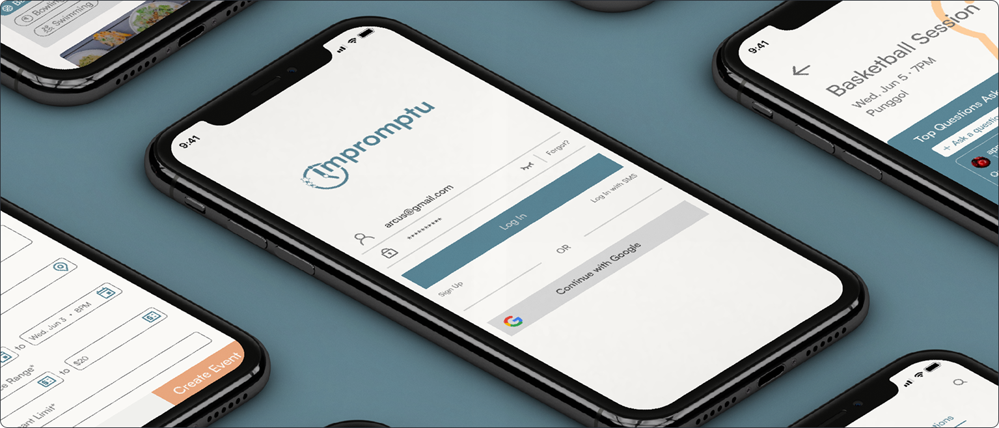
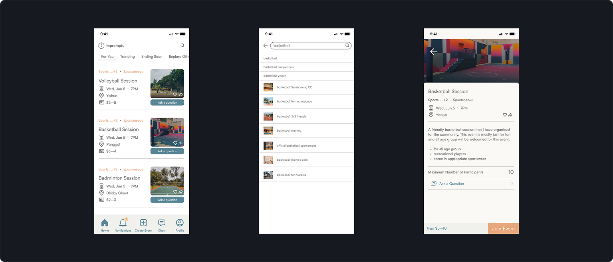
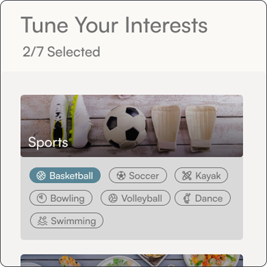
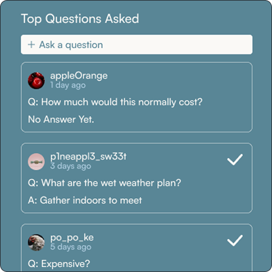
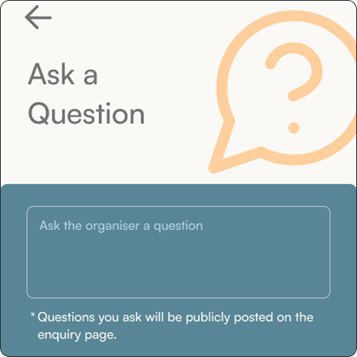
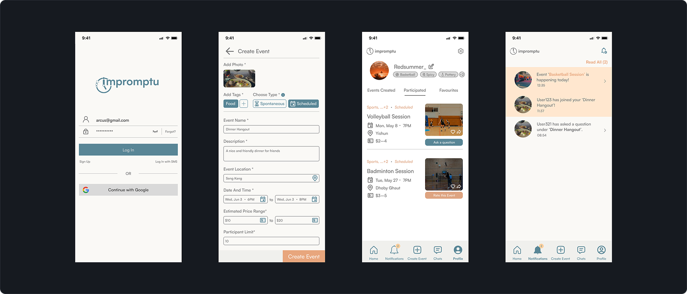

A group project focused on improving how users find and join activities, making event discovery and organisation more seamless.


Filtering & Personalisation
Improved filtering and profile-based preferences to help users quickly find relevant activities.
Event Enquiries & Q&A Separation
Separated enquiries and Q&A to make key event information easier to scan and support faster decision-making.



